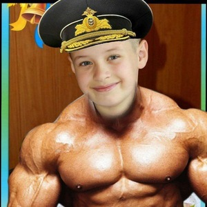

Це сайт про Мотю-Жмотю, і його історію

Його ORIGINAL NAME Лапіська но він мотя-жмотя...
ЧОМУ???????
Тому що він жмотя-мотя ой мотя-жмотя він назвав свого однокласника це я створювач сайту л0х0м, і тепер про нього є сайт в інтернеті публічний
Створювач сайту ЛІМОН🍋🍋🍋🍋🍋🍋🍋🍋 сайт був створений 02.12.2025 ну все мотя-жмотя я тебе провчив...